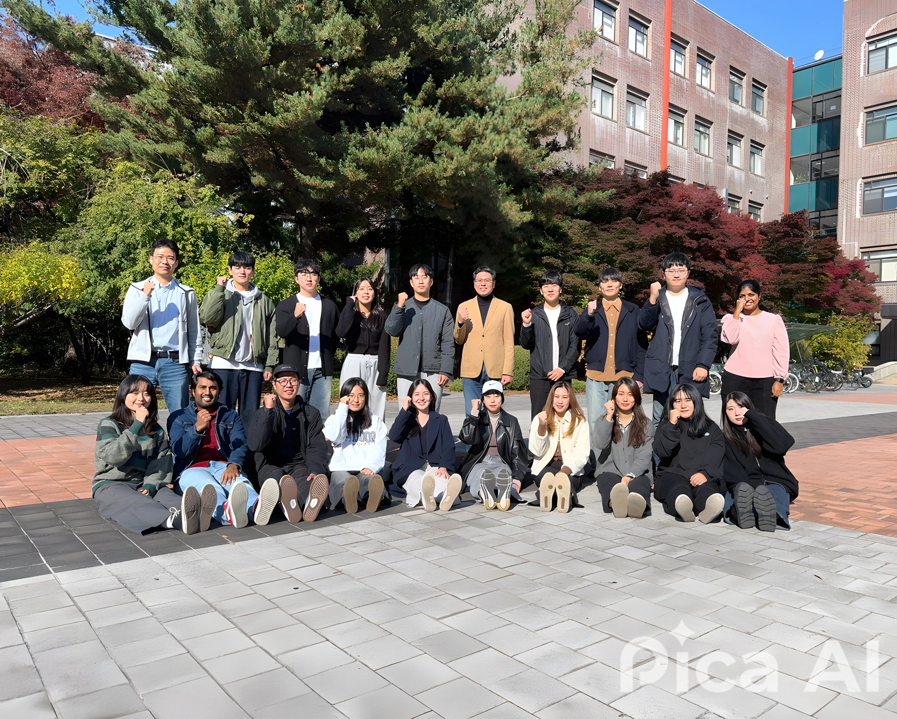

Welcome!
The research interest of our laboratory lies at the interface between Materials Science, Biology, Chemistry, and Nanotechnology. We are developing nanoscale materials or devices which can be applied to diverse levels of biological systems for diagnostics or therapeutics. We are also investigating opportunities to adapt programmable and readily modifiable properties of biomolecules in the fabrication of smart materials or advanced nanoscale devices.
